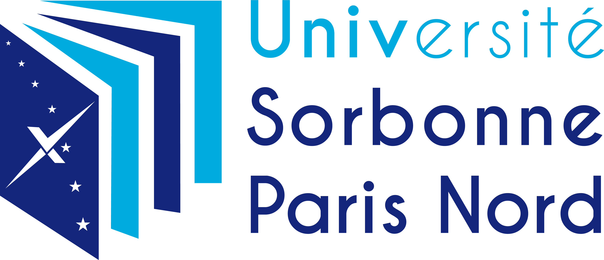

Interview nr 1 of a winner :
Tinhinane SALEMKOUR
19years
Student at Université Paris XIII
How do you feel a few days of competition?
I stress a lot but I try to train just as much in order to be ready on D-Day because my biggest fear would be that stress would overwhelm me and that I would forget my speech on the day of the eloquence contest.
Have you always been eloquent where it is an ability that has arrived over time?
In my life I have always been very sociable I have never had trouble chatting with new people or even speaking in public I sometimes get stressed but it is not recurrent.
What has this competition given you so far?
This competition has so far given me a lot of self-confidence and this pleasure of feeling listened to is like before. a certain power over its surroundings to capture their attention no matter what I say.
Do you have a figure of eloquence that inspires you?
During the year we saw a film about eloquence contests and I was very inspired by Eddy one of the participants of the contest by his way of bringing his speech without filter and we are in ourselves.
What does the competition bring to your daily life?
For the moment, the contest has allowed me to learn how to better express myself, use the right words in the right situations and have a certain impact.
What do you expect from this competition?
What I expect from this competition is to be proud of myself and that my classmates are too.
Interview nr 2 of another winner :
Kaïs HAMMACHE
18years
Student at Université Paris XIII
How do you feel a few days of competition?
I'm feeling a little stressed but I hope it's okay.
Have you always been eloquent where it is an ability that has arrived over time?
No, it happened over time and as I was quite shy at the base.
What has this competition given you so far?
For the moment the competition has allowed me to learn to express myself in public and improve myself little by little.
Do you have a figure of eloquence that inspires you?
Nelson Mandela and Martin Luther King are people who inspire me enormously in their way of speaking and bringing their ideas.
What does the competition bring to your daily life?
It allowed me to use words better in my daily life and to speak more easily.
What do you expect from this competition?
Personally this contest is just a challenge to myself and I want to see if I can take it up and overcome this ordeal.
Teacher interview nr 3 :
Oriane DESEILLIGNY
Teacher at l’université Paris XIII
What did you think of this year's edition and the candidates?
So first of all I am very happy that this edition could take place because the competition was absent for two years but above all I am very happy with the quality of the candidates for this year of benefits because the candidates have really worked upstream they have all of us overwhelmed by their arguments their presence on the stage their theatrical acting if that was a very good time. It's not necessarily easy to listen to 12 people in a row, we had thought about the basis to take a break at half the candidates but we did not need that because everything the people were attentive and committed, which proves that the quality was there.
We followed two candidates during this competition who are students you had during this year how did you feel about them?
They were good at the start they always played the game of the exercise of the rhetoric of the structuring of the argumentation of the reflection requested through this subject. The first time that they went to the oral they were stressed I think but found a certain pleasure until today which does not exclude stage fright. The group supported them the group was very carrier in this work and I am very proud for them. It was a lot of work but it has borne fruit.
Why do you think we should participate in a speech contest?
It's a way to surpass yourself, to go beyond what you do every day by means of express yourself to be heard and be yourself with stage fright. Candidates with the best successful in the contest are those who managed to make the home scene.
Do you have something to add?
I am very happy with this morning and it is for days like this that I do my job because it's a lot of emotion you students are you working to overcome and that is really the reward.